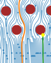

stokes_number

Definition: The Stokes number (Stk), named after George Gabriel Stokes, is a dimensionless number characterising the behavior of particles suspended in a fluid flow. The Stokes number is defined as the ratio of the characteristic time of a particle (or droplet) to a characteristic time of the flow or of an obstacle, or
Source: Wikipedia
Wikipedia Page
Wikidata Page